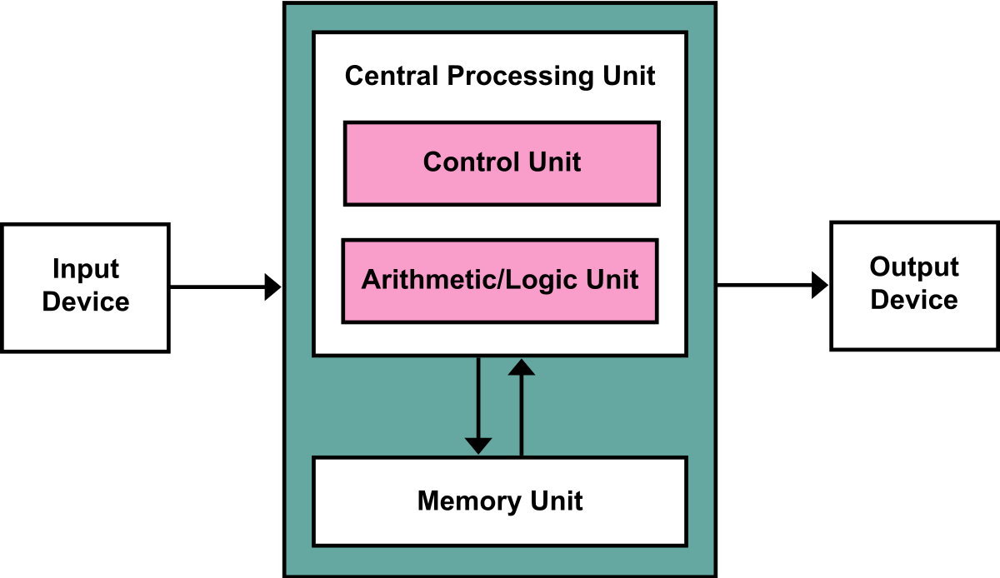

Moore's law refers to an observation made by Intel co-founder Gordon Moore in 1965. He noticed that the number of transistors per square inch on integrated circuit boards had doubled each year since their invention and so Moore's law predicts that this trend will continue into the foreseeable future. Basically this is Gordon Moore’s prediction coming true as every year hardware becomes faster and more powerful and at the same time cheaper.
The purpose of the CPU is to process data, to take in all the instructions and execute them so that the computer functions. It does this using the fetch-decode-execute cycle, first it fetches an instruction, then it decodes the instruction before executing it. The number of times this cycle is performed per second is measured in Hertz, 1 cycle per second = 1Hz, most modern computer CPU’s perform at a speed of around 3 Ghz. That is 3x10^9 cycles per second.
Any processing unit in a computer contains a core, however it is possible for each processing unit to contain multiple. For example in most modern computers CPU’s usually contain 2 or 4 cores, as it dramatically speeds up the performance of the computer. Each core can process a separate instruction at once meaning that 1 CPU can handle multiple instructions simultaneously.
Pipelining is the system of queuing items up in order so that the CPU handles the instructions as fast as possible. A real life example of this could be at a hand car wash as if things such as hot soapy water was not prepared before the car arrived or the sponges being rinsed then the process would be delayed.
There are many different types of registers(A register is a small memory address) in the CPU, here is a short list of some of the most important ones:
PC-Program counter, the value stored in this register is the memory address for the next instruction to be executed by the CPU.
MDR-Memory Data Register, here data from a fetch is stored ready for the CPU to process as well as data to be written to a memory address coming from the CPU is stored here before being copied to the correct memory address.
MAR-Memory Address Register, stores the memory address from which data will be fetched to the CPU or the address to which data will be sent and stored, this works in conjunction with the information in the MDR.
CIR-Current Instruction Register, holds the instruction currently being executed or decoded.
ACC-Accumulator, the result of any arithmetic and logic calculation is stored there temporarily before being read back for the next calculation, it is used because it is like all registers in the CPU much faster than saving the result to main memory.
GPR-General Purpose Registers, these registers are used to store any data that might be needed quickly but not instructions, they go to main memory. Here things such as values of other registers can be temporarily stored here before being read back in if the program was interrupted by a higher priority program.
ALU-Arithmetic Logic Unit, this unit performs arithmetic calculations on integers and binary numbers.
CU-Control Unit, its job is to tell all the other arithmetic devices, such as the ALU, how to respond to an instruction being executed by the CPU. Without this no instruction would ever be performed.
Very similar to a CPU is a GPU or Graphical Processing Unit which has a slightly different purpose. For example, in a first-person shooter the GPU would be responsible for creating graphics, textures and colors within the game, while the CPU, not having to work on the graphics, can use its processing power for running the artificial intelligence or calculating the game's mechanics and physics.

Born on December 28, 1903 Von Neumann was a hungarian mathematician, physicist, inventor, computer scientist, and polymath and over his life made major contributions to all of these areas. He also worked with the american military in world war 2 to develop many aspects of the manhattan project. In his early years he was a child prodigy being one of hungary's top students and went to many prestigious schools. By the time he was 26 he had published thirty two separate papers in varying fields
In von neumann architecture the CPU takes an inputted value, processes it and outputs a value. The values are moved along the same buses which can become a bottleneck but it is unusual as the buses are very fast
CISC-Complex instruction set computing, larger instruction sets (more operations, etc.), slower clock speeds, fewer general purpose registers.
RISC-Reduced instruction set computing smaller instruction set, faster clock speeds, more general purpose registers.
Nowadays almost all computer systems use RISC because instruction pipelining can be used as well as the hardware being able to handle very fast clock speeds meaning that the short instructions of RISC benefit from this more whereas CISC will gain little to no benefit from a fast clockspeed as the instructions still take a long time.
Control Bus-Information such as what power to send where and when is sent along these buses all around the computer to every piece of electronic hardware in the system, also handles interrupts.
Data Bus-Moves data around memory, from main to the registers, between registers etc, it carries both instructions and data for the CPU. 64bit CPU refers to the width of these buses as they decide how many bits of data the CPU can handle at once.
Address Bus-The location of where the data needs to come from or go to is sent along these buses. The width of the address bus determines how many locations it can access. For example a 16 bit address bus can access up to 216 locations or 65,536 locations.
Memory is the working storage in a computer needed for the computer to function.
Random Access Memory is used to store recent instructions that are needed to be accessed by the CPU frequently and as such has a very fast access time allowing for fast processing of data.
Read Only Memory is hard coded data that cannot be written over, the information on the ROM chips are the boot sequence for the computer, this tells the power supply where to send power, the cpu what to do, it makes the CPU check all the systems hardware for errors etc, it is a vital part of turning on your computer.
Cache Memory is very fast access memory used to store instruction and data that the CPU will need very soon, any data not being used frequently will be replaced with newer data that is more frequently used.
Secondary Storage is where all applications and programs none essential to the running of the computer are stored, everything from the OS, to anti-virus, to games.
The purpose of secondary storage is so that the user can save data and turn off the computer without losing all of the work they have done that day. This means that when for example you play a game the next day you can pick up where you left and continue your progress.